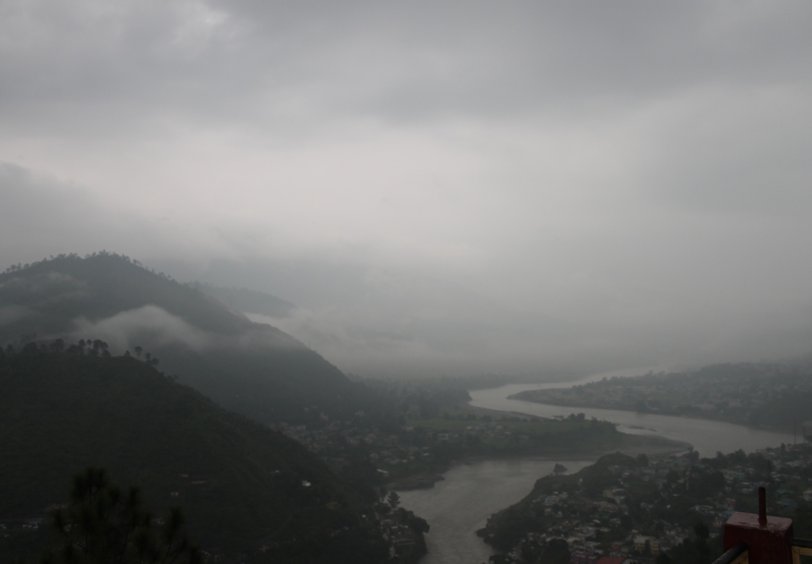

Srinagar : beauty that embodies green rolling mountains
The historic town of Srinagar is cradled on the pristine banks of Alaknanda River. It is seated at an average elevation of 560 metres above sea level. The pristine town of Srinagar is an important cultural and educational centre. It lies on the foothills of the Himalayas and is bestowed with the munificence of nature attracting tourists from everywhere. It is an important point of stay during Badrinath, Kedarnath and Char Dham Yatra.
History of Srinagar
For years, Srinagar has been the capital of the Garhwal kingdom till the arrival of the British. It was also devastated twice by two earthquakes that swept the town completely. Srinagar was rebuilt by the British during 1897-99 and was given the urban status in 1931. Today, Srinagar is an important center if learning and culture. It is home to the HNB Garhwal University or the Garhwal University as it was known formerly.
Places to Visit in Srinagar
-
Dhari Devi
On the banks of Alaknanda river, the holy temple of Goddess Dhari Devi is located between Srinagar and Rudraprayag on Badrinath Road. Dhari Devi Temple diety is Maa Dhari Devi. Now relocated from 20 meter high rock to man made structure in 2013, Dhari Devi Temple is the center of faith for the people of Garhwal

-
Kamleshwar Temple
Kamleshwar Mahadev Temple is one of popular Shiva Temples of Garhwal Region. It is one of the five Maheshwar Pith's of Himalayas according to Kedarkhand. The temple is located in Srinagar Town near its main market. It is one of oldest temples of Uttrakhand and a divine and serene Pilgrimage to pay homage to Mahadeva.

The Kamleshwar Mandir had idols of Lord Ganesha and Adi Shankracharya. In main temple there are idols of Saraswati, Ganga, Annapurna and Nandi. The Shiv Ling is present in the main sanctum sanctorum.
-
Ganga Darshan
Ganga Darshan is one of the best place to enjoy meandering soothness of Alakananda river. It is 8.7 km from Srinagar. Some of the most ice catching scenery of Srinagar town can be encountered while going to Ganga Darshan form Srinagar. It is situated on Pauri road and one can easily seight it while going to Pauri from Srinagr
-
Bil ke daar
Bil kedar is a very underated visting place according to many famous tourist sites and thus finding this place in those websites becomes a hefty task. It is 7.9 km from Srinagar. Best months to visit this place is around Mid April to Mid June. This place becomes extremely dangerous in Monsoon season to due to increased water level.